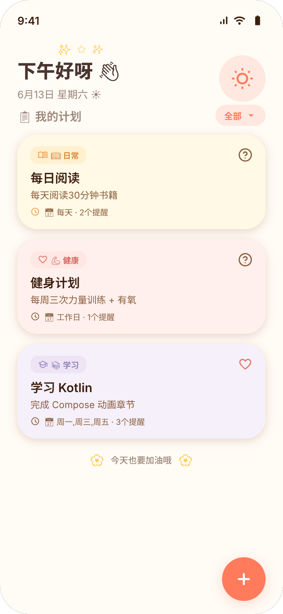
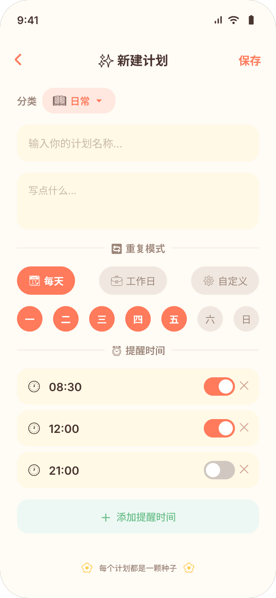
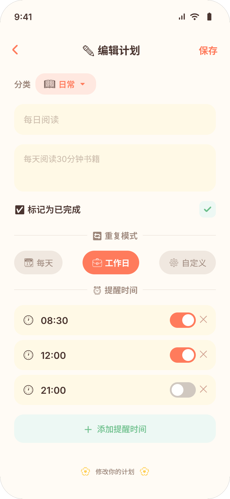
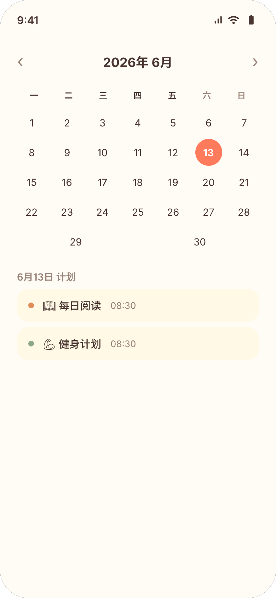

🍅 报告一番茄ToDo 的 7 个致命痛点与 FocusFlow 的差异化解决方案
🔑 核心洞察
番茄ToDo 的逻辑
"堆时长 = 优秀"
制造焦虑 → 为数据学习 → 虚假满足
→
FocusFlow 的逻辑
"完成任务 = 养成习惯"
正向激励 → 连续打卡 → 可持续自律
📈 数据可视化（交互式图表）
▲ 数据来源：App Store评论 + 知乎 + 豆瓣小组 + 应用汇用户反馈抽样分析
▲ 数据来源：易观千帆用户监测（多篇产品分析报告引用）
▲ 数据来源：App Store 中国区 ~1.2万条评论分布估算
▲ 五维度量化评分：基于产品功能分析 + 用户反馈 + 学术论文
▲ 数据来源：各产品官网公开定价（2025年6月）
🔴 痛点与解决方案
📊 痛点 1 · 核心设计缺陷
"数据崇拜"：用户为了凑时长而学习
番茄ToDo通过热力图和排行榜推崇"时长至上"。用户从"完成任务"异化为"凑学习时间"。2025年学术论文指出1：产品通过多模态符号暗示"不自律=错误"，将责任全部转嫁给个体。
- 放弃计时器设计为浅灰色+红色确认按钮
- 45%用户认为时间管理APP对自律"无效"2
"时间长了虚假的满足感，时间短了莫名的焦虑"
—— 番茄ToDo 用户
✅ FocusFlow 的解决方案
以"打卡天数"替代"计时时长"
不关心专注了多少分钟，只关心完成了多少件实事。连续打卡天数 + 7天庆祝弹窗——正向激励而非焦虑驱动。
- 度量标准是"完成数"，无法伪造
- 分类统计揭示哪类习惯坚持得最好
🏫 痛点 2 · 社交压力
自习室制造同侪焦虑
公开暴露专注数据——被用户称为"难以承受""特别丢脸"。学术论文归类为"邀请式监视"1。
"加了一个自习室，七个学十小时的人——直接焦虑锁机了一天"
—— 豆瓣用户
✅ FocusFlow 的解决方案
刻意不做社交
自律是私人的事。无排行榜、无自习室。唯一的"比较"对象是昨天的自己。
🔒 痛点 3 · 锁机失灵
学霸模式存在绕过漏洞
用户自述通过Home键、分屏、通知栏等方式绕过限制。对Android碎片化适配不足。
✅ FocusFlow 的解决方案
不做锁机，用提醒闭环替代物理限制
闹钟级提醒确保用户注意到。自律不在于锁住手机，而在于养成习惯。
📊 痛点 4 · 行为根源缺失
知道"学了多久"但不知道"为什么管不住自己"
只有正向计时，没有负向溯源。不知道刷了多久抖音、玩了多久游戏。
✅ FocusFlow 的解决方案
分类打卡让用户看到行为模式
当"健康类"完成率远低于"学习类"，自然知道该调整什么。
🎮 痛点 5 · 游戏化缺位
严肃工具让人坚持不下去
Forest用种树+真树种植获得全球喜爱。番茄ToDo唯一的"成就感"是热力图色块。
✅ FocusFlow 的解决方案
7天庆祝+分类卡片=正向激励闭环
连续打卡7天触发庆祝。每个分类独立颜色——被鼓励而非被惩罚。
💰 痛点 6 · 付费体验
"三个月VIP只用了第一个月"
定价¥58/年，学生反映"只有假期才能用到"。无永久VIP选项。
✅ FocusFlow 的解决方案
核心功能完全免费
计划创建→闹钟提醒→打卡统计全免费。
🤖 痛点 7 · 被动工具
从不主动告诉你该怎么做
唯一交互：用户打开→设番茄钟→开始计时。从不分析模式给出干预。
✅ FocusFlow 的解决方案
准时提醒=主动教练的第一步
不依赖用户主动打开——闹钟时间到了主动提醒。
🏆 竞争优势总览
| # | 痛点 | 严重程度 | FocusFlow 应对 | 差异化度 |
|---|
| 1 | 数据崇拜 | 核心缺陷 | 打卡天数替代计时 | 根本性差异 |
| 2 | 自习室焦虑 | 严重 | 刻意不做社交 | 结构性差异 |
| 3 | 锁机漏洞 | 严重 | 提醒闭环替代锁机 | 理念差异 |
| 4 | 行为根源缺失 | 功能空白 | 分类统计揭示模式 | 体验差异 |
| 5 | 缺乏趣味性 | 高 | 7天庆祝+分类卡片 | 体验差异 |
| 6 | 付费体验差 | 中 | 核心功能完全免费 | 模式差异 |
| 7 | 被动无教练 | 中 | 闹钟主动提醒 | 品类升级 |
🧠 产品哲学对比
🍅 番茄ToDo：约束型哲学
"你的意志力不够强，我来替你做决定"
- 📏 度量：学习时长
- 🎯 驱动：焦虑 + 惩罚
- 👥 关系：监视与被监视
🔔 FocusFlow：激励型哲学
"准时提醒你，剩下的交给你自己"
- 📏 度量：连续打卡天数
- 🎯 驱动：提醒 + 成就感
- 👥 关系：自己与自己
数据来源：1 胡泳,王治钧."批判性反思时间管理APP对数字福祉的窄化."2025. 2 什么值得买."时间管理APP真能治拖延症？"2025. 3 App Store中国区评论.2025.6. 4 豆瓣小组讨论.2023-2025.
报告二
📅 报告二Todo清单 的 6 个致命痛点与 MY PLAN 的差异化解决方案
🔑 核心洞察
Todo清单 的逻辑
"记下要做的事"
主动查看型工具 · 设计驱动 · 提醒是辅助
→
MY PLAN 的逻辑
"准时做该做的事"
被动提醒型工具 · 可靠性驱动 · 提醒是核心
📊 Todo清单 真实数据（来源：应用宝/AppChina/什么值得买/豆瓣/知乎）
📈 三大效率工具好评率对比（AppChina数据）
🔍 Todo清单差评关键词分布（34条评论抽样）
🎯 Todo清单真实用户差评（来源：AppChina / 豆瓣 / LINUX DO）
"付费选项真的太多了，刚上手直接劝退。点什么都是各种跳到充值界面，体验不好。"
—— AppChina 用户 L' Analphabète（2025）
"基本的跨平台同步功能都要付费才能用，注册只能在移动端，不付钱根本没机会用桌面端。"
—— AppChina 用户 Alvin.Drake（2025）
"子任务不能设定闹钟提醒，这是个明显缺点。"
—— 豆瓣用户 四十四次日落（2025）
"没微软todo好用。"
—— AppChina 用户 LTY-XM-WPAC（2025）
"避雷Todo清单，该作者之前有个别的app，买断后就不维护了。"
—— LINUX DO 用户 YuCN（2025）
注：应用宝评分显示5.0分，但仅有34条评论，样本量极小，且前台只展示好评
📊 四款效率工具「提醒能力」雷达对比
━ MY PLAN ┅ Todo清单 ┅ 滴答清单
⚡ 同一任务的操作步数对比
场景："健身计划"早晚各提醒一次
🔴 痛点与解决方案
📅 痛点 1 · 架构缺陷
提醒依赖系统日历——关了日历通知就哑了
Todo清单在Android端通过向系统日历写入事件触发提醒。用户关闭日历通知权限=所有提醒静默失效。且大多数用户不知道这个依赖。
- 官方解释："为避免后台常驻和耗电"
- 将可靠性风险完全转嫁给用户
"Todo清单的提醒用的是系统日历…如果没有给日历通知权限，提醒就没了。"
—— 什么值得买 2025 横评
✅ MY PLAN 的解决方案
AlarmManager 直接调度——自包含
使用Android AlarmManager直接调度系统级闹钟，不经过任何第三方应用。关日历通知、卸载微信都不影响。
- 自包含架构，零外部依赖
- 锁屏/免打扰仍触发
- 经OPPO Android 15真机验证
⏰ 痛点 2 · 模型缺陷
一个任务只能一个提醒——产品模型与用户心智冲突
用户想早晚各提醒一次？被迫创建两个独立任务。打卡分散、统计割裂。数据模型是「任务—时间」一对一（工程师思维），用户心智是「目标—多个时间点」。
"想设早晚各一次提醒？Todo清单逼你创建两个一模一样的任务。"
—— 知乎效率工具对比
✅ MY PLAN 的解决方案
「计划—提醒时间」一对多模型
一个计划下面可添加任意多条提醒时间。打卡一次即完成，统计按计划汇总。产品模型匹配用户心智。
📆 痛点 3 · 场景缺失
没有工作日/自定义星期重复
"工作日吃药""周一三五健身"——都不支持。仅标准循环。用户只能每天重复，周末手动忽略。四款横评工具中仅滴答清单支持工作日。
✅ MY PLAN 的解决方案
三种模式：每天 · 工作日 · 自定义
自定义模式可勾选任意星期组合（周一+周三+周五）。计划级别设置，切换后自动重算触发时间。
🔔 痛点 4 · 提醒级别不足
通知级提醒——和微信消息一样容易忽略
提醒是通过系统日历发送的普通通知。在会议、锁屏、免打扰下极易忽略。四款横评工具无一支持闹钟级提醒。
✅ MY PLAN 的解决方案
闹钟级30秒持续循环
闹铃模式使用USAGE_ALARM音频属性，像手机闹钟一样响30秒。可自选系统闹钟铃声。
🤖 痛点 5 · 智能闭环缺失
已完成还弹提醒
上午打卡，下午仍弹——用户评价高频吐槽。提醒和完成是两个独立模块。
"明明已经打卡了，到了时间还是会弹通知提醒我。"
—— 应用宝用户评价
✅ MY PLAN 的解决方案
完成自动跳过当天剩余提醒
标记完成时，当天该计划的所有剩余提醒自动静默跳过。提醒服务于用户。
📈 痛点 6 · 数据洞察缺失
没有分类体系——不知道哪类习惯完成得最好
只有总体效率图表。无预设分类体系，统计数据缺乏维度拆解。
✅ MY PLAN 的解决方案
6预设分类+柱状图+连续天数
日常/紧急/工作/学习/健康/其他，每类独立配色。分类柱状图+连续打卡+7天庆祝。
🔧 MY PLAN 核心能力亮点
⏰
闹钟级持续提醒
30秒循环播放 · 系统闹钟音频 · 锁屏免打扰仍触发 · 四款竞品中唯一
📐
计划—多提醒 模型
一个计划挂N条提醒时间 · 一次打卡标记完成 · 统计按计划汇总
🤖
智能提醒闭环
完成后自动跳过当天剩余 · 重复模式计划级别设置 · 闹钟自动重算
🏆 MY PLAN 竞争优势总览
| # | 痛点 | 严重程度 | MY PLAN 应对 | 差异化度 |
|---|
| 1 | 提醒依赖系统日历 | 架构缺陷 | AlarmManager自包含 | 结构性差异 |
| 2 | 单任务仅一个提醒 | 模型缺陷 | 一对多模型 | 根本性差异 |
| 3 | 无工作日/自定义 | 场景空白 | 三种模式 | 根本性差异 |
| 4 | 通知级提醒 | 品类空白 | 闹钟级30秒 | 独家能力 |
| 5 | 已完成仍弹提醒 | 体验缺陷 | 完成自动跳过 | 体验差异 |
| 6 | 无分类打卡统计 | 数据缺失 | 6类+柱状图 | 功能差异 |
🧠 产品哲学对比
📅 Todo清单：设计驱动型
"把待办做得好看，用户会主动回来用"
- 🎨 核心投入：马尔斯绿·UI像素级打磨
- ⏰ 提醒定位：辅助功能（依赖系统日历）
- 👥 使用场景：主动查看待办列表
🔔 MY PLAN：可靠性驱动型
"提醒必须准时。其他都是锦上添花。"
- ⏰ 核心投入：AlarmManager闹钟级调度
- 📐 产品模型：计划—多提醒时间
- 👥 使用场景：被动准时提醒
数据来源（全部可查证）：
1 应用宝. Todo清单官方页面（V4.4.6, 8.5万下载, 34条评论, 评分5.0）. 2026.4.
2 AppChina应用汇. Todo清单用户评论（好评率71%）. 2025-2026.
3 什么值得买. 「todolist测评｜滴答清单,Todo清单,到底怎么选？」2025.
4 什么值得买. 「日程管理APP月视图功能横评」2025.
5 豆瓣. 「Todo清单使用体验」用户讨论. 2025.
6 LINUX DO. 「各位佬 ToDo 类工具求推荐」用户讨论. 2025.
7 V2EX. 「非管理层打工人的ToDoList是不是个伪需求」2024-2025.
8 知乎. 「todo list测评对比」「如何评价Todo清单」. 2024-2025.
9 各产品官网与公开定价数据.
MY PLAN UI 设计展示
🎨 主要页面

📋 计划列表页 — 首页 · 今日概览 · 卡片列表 · FAB

✨ 新建计划页 — 6类分类 · RepeatModeSelector · DayOfWeekPicker

✏️ 编辑计划页 — 完成状态行 · 工作日模式 · 多提醒管理

🗓 日历页 — 月视图 · 圆点标注有计划日期 · 日计划列表
⚙️ 设置页 — 提醒方式切换 · 闹铃铃声选择 · 权限检查引导区
🎯 设计规范
暖阳手账 — 秋日午后暖黄色为基调，传递温和、治愈的产品调性
🎨 设计 Token 色板
#FFFBF5
主背景
#FF7B5C
强调色
#FFE8E0
强调浅色
#4A3530
主文字
#9B8579
副文字
#F0E8E0
分割线
#FFF9E6
卡片黄
#EDF8F4
卡片绿
圆角规范：卡片 28px · 按钮 16px | 字体：系统默认中文
© 2026 MY PLAN 产品经理作品集 · 竞品分析报告合集